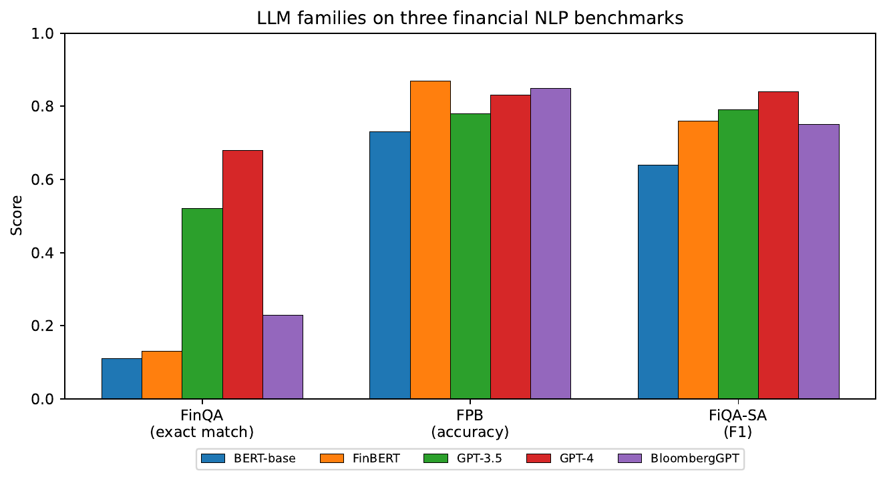

Large Language Models in Finance · Chapter 7 / Lecture 7
Other Applications in Finance and Future Trends
From scattered use-cases to deployed systems — and the governance that has to come with them.
Juan F. Imbet · EDHEC Business School / Paris Dauphine – PSL University
Roadmap
Where this final lecture is going
Applications across finance — and how to pick a deployment pattern and an architecture.
Automating workflows — treating a finance process as a graph of tasks.
A research assistant — the reference architecture, built on hybrid RAG.
Ethics, bias & regulation — what fairness can and cannot mean.
Deploying in regulated environments — model risk, monitoring, incidents.
Frontier & open problems — multimodal, long-context, autonomous agents.
the bigger picture
The earlier lectures built capability. This one is about turning capability into systems you can
deploy, defend, and govern — because in finance an unaccountable model is a liability, not an asset.
01
LLM applications across finance
A map of where we have been — and how to choose the right tool for a new task.
Where we have been
The whole book on one page
Every chapter paired a technique with an application. Read top to bottom, the book moves from
cheap word-counting to agents that reason in multiple steps.
Ch.
Topic
Primary technique
Application
1
Text fundamentals
TF-IDF, word embeddings
Sentiment, classification
2
Modern LLM landscape
Transformer, RLHF
General financial NLP
3
Training & fine-tuning
LoRA, PEFT
Domain adaptation
4
LLM agents
ReAct, tool use
Research automation
5
Business valuation
RAG, summarisation
DCF, comparables
6
Credit risk
Constrained gen., SHAP
Scoring, fairness
7
Applications & future
Workflows, multimodal
Deployment, governance
the through-line
Early chapters: lightweight representations, large corpora, modest compute. Later chapters: generative and
agent-based models with multi-step reasoning. This chapter: the cross-cutting concerns of
deployment, governance, and frontier capability.
The application landscape
Where LLMs are already earning their keep
Beyond the chapters' headline cases, the same machinery shows up across the front and back office.
a systemic warning
López-Lira (2025): heterogeneous LLM agents in simulated markets reproduce real market dynamics — and
generate systemic risk from correlated strategies.
First decision: how to deploy
Zero-shot, RAG, or fine-tuning?
Before choosing a model, choose a pattern. Each trades off the data you need against latency and cost.
Pattern
Best for
Data
Latency
Cost
Zero-shot
General reasoning, novel tasks
None
Low
Per-call
RAG
Document QA, live data, audit trail
Corpus
Medium
Corpus + call
Fine-tuning
Structured output, consistency
Labelled
Low
High (train)
Three heuristics
Prefer RAG over fine-tuning when the task needs grounding in updatable documents (current regulation, recent filings). Fine-tuning embeds knowledge statically.
Fine-tune when output is highly structured and consistency across thousands of calls beats generality.
Zero-shot with a frontier model is a valid baseline first. FinanceBench: frontier models answer ≈80% of financial QA correctly on the first attempt.
When the axes conflict
Real tasks don't sit in one column
A task may want both the freshness of RAG and the consistency of fine-tuning, or both low latency
and rich generation. So what breaks the tie?
tiebreaker
When the two selection axes conflict, latency and interpretability dominate: real-time,
high-stakes applications default to the simplest, most auditable approach.
practical consequence
In regulated finance, the auditability of a zero-shot or RAG pipeline often outweighs the marginal accuracy
gain of a fine-tuned model whose decision logic is harder to document and defend.
Second decision: which architecture family
Match the architecture to the task's properties
Encoder-only, decoder-only, encoder-decoder, or agentic — each is strong on different task properties.
Who wins where? Five LLM families on three financial NLP benchmarks
Domain-adapted models lead on sentiment; larger general-purpose models win on numerical reasoning — the architecture table's predictions confirmed empirically.

Figure. Performance of five LLM families on three financial NLP benchmarks. FinQA (Chen et al., 2021) tests numerical reasoning over tables and text (exact-match); FPB (Malo et al., 2014) tests three-class sentiment classification; FiQA-SA (Maia et al., 2018) tests aspect-based sentiment (F1). GPT-4 leads on numerical reasoning; FinBERT and BloombergGPT — both domain-adapted — lead BERT-base on sentiment but are surpassed by larger general-purpose models. Source: original benchmark papers and Xie et al. (2023) FinBench survey.
the pattern
Domain pre-training helps most when the task is vocabulary-sensitive (sentiment lexicon, tone). Raw scale dominates when the task demands numerical reasoning across tables and prose. Neither family is universally superior — which is why the architecture decision table matters.
02
Automating financial workflows
Treat a process as a graph of tasks — then wire LLMs into it without breaking the plumbing.
The mental model
A workflow is a graph of tasks with dependencies
Picture a process as boxes (tasks) and arrows (one task feeds the next). No arrow loops back —
so there's always a sensible order to run it.
Pattern
Concurrency
Best for
Sequential pipeline
None
Ordered, batch, cascading failures
Event-triggered
Per-event
Semantic triggers, alert systems
Orchestrator-worker
Parallel subtasks
Expert specialisation, replanning
Workflow examples · 1 & 2
Two finance workflows: a pipeline and a monitor
1 · Earnings call pipeline (sequential)
Retrieve transcript
Extract structured guidance (revenue, margin, capex) as JSON
Compare to analyst consensus; compute surprises
Classify tone (constructive / cautious / evasive)
Draft a standardised analyst briefing
Minutes from call end to delivered briefing, vs. hours of analyst time.
2 · Regulatory filing monitor (event-triggered)
SEC EDGAR RSS feed → classify each 8-K by type and materiality → route to the right team with a summary.
Materiality is semantic, not syntactic — you can't catch it with a keyword filter.
Workflow examples · 3
Trade surveillance: humans decide, LLMs draft
An orchestrator-worker pattern: a rule-based system flags an unusual order, then an LLM assembles
the story for a human to judge.
Rule-based system flags an unusual order pattern → LLM retrieves news + social media + internal comms
→ drafts a structured narrative → compliance analyst reviews and decides.
integration principle
LLMs operate at seconds-to-minutes scale; execution systems operate at microseconds. Integration is always
asynchronous. This is structural, not a limitation.
What the three share
Every workflow has a trigger, an LLM stage, and a human gate
A trigger — a finished call, an EDGAR feed item, a rule-based flag.
One or more LLM stages — doing extraction, classification, or drafting.
A human checkpoint — before any consequential decision is taken.
why the asynchronous boundary matters
Because LLM stages run at seconds-to-minutes latency, they never sit on the critical path of trade
execution. They produce analysis and narrative, which humans or downstream systems act on —
preserving both speed and auditability.
Connecting to the plumbing
LLMs talk to existing systems through tool wrappers — never raw protocols
Financial infrastructure was built long before LLMs. Connecting them requires translation layers at the data, compute, and governance levels.
Standard protocols — the wires LLMs never touch directly
FIX — order routing between execution systems
SWIFT — international payment messaging
XBRL — structured regulatory filings
BLPAPI — Bloomberg Terminal market data
A tool wrapper such as get_market_data(ticker, fields, start_date, end_date) translates a natural-language request into a well-formed BLPAPI call and returns a clean DataFrame.
Three integration levels
Data — tool wrappers abstract each vendor protocol; LLM sees clean abstractions
Compute — LLM output is asynchronous enrichment at seconds-to-minutes; execution at microseconds stays separate
Governance — every LLM call is an audit record: model version, full prompt, output, tool calls, timestamp
the structural rule
LLMs produce enriched parameters that downstream systems act on. They never make real-time execution decisions. This clean temporal separation is a feature, not a limitation.
03
Building a financial research assistant
A reference architecture in five separable parts — and why retrieval has to be hybrid.
The reference architecture
Five components, each developed and audited on its own
A good research assistant isn't one black box — it's five concerns kept apart so each can be
validated separately.
why separate them
Retrieval, synthesis, memory, tools, and interface can each be developed, validated, and audited
independently — the only way to keep a regulated system maintainable.
Retrieval, done right
Why hybrid retrieval is non-negotiable
Meaning-based search is great at paraphrase but bad at exact figures and codes. So production
assistants run two retrievers and fuse the results.
Dense embeddings capture meaning but blur exact tokens and figures; sparse (BM25) retrieval nails exact
terms but misses paraphrase. Run both; fuse the rankings.
RAG for filings
Chunk a 10-K by its structure, not by token count
Slicing a filing into blind 512-token blocks shreds exactly the structure that carries the meaning.
Each SEC Item indexed independently (Item 1A, 7, 8, …)
Tables extracted as structured objects; indexed by a separate retriever
Substantial reduction in retrieval noise on financial-document QA
RAG for filings · embedding choice
General-purpose embeddings outperform specialist ones more often than not
Choosing the embedding model is less decisive than choosing the chunking strategy — but there are clear practical guidelines.
Strong general-purpose baselines
OpenAI text-embedding-3-large — cloud-hosted, strong on cross-domain retrieval
e5-mistral-7b — open-source, competitive on domain transfer
Perform well on financial document retrieval without task-specific fine-tuning.
Finance-specific embeddings
Fine-tuned on SEC filings and earnings calls show modest improvements on in-domain queries — but sometimes underperform on queries requiring cross-domain reasoning.
practical recommendation
Use a strong general-purpose model as the baseline. Evaluate whether domain fine-tuning yields sufficient improvement to justify its operational cost before committing.
RAG for filings · attribution & context
Cite every claim — and don't drown the model in context
Every claim must cite a retrieved passage.
Claims without retrieved support are flagged as model inference, not retrieved fact.
In regulated contexts, source attribution is the audit mechanism.
Context-length paradox (Balogh & Didisheim, 2025)
LLM predictive accuracy follows an inverted-U in context length. Excessive context degrades performance —
mirroring cognitive overload in human analysts.
implication
More retrieved context is not automatically better: tightly targeted, well-attributed passages beat dumping
an entire filing into the prompt.
Production research assistant
Four challenges that only surface after launch
A prototype that impresses in demos will fail in production unless you solve freshness, hallucination, scale, and feedback before users hit it hard.
Freshness vs. accuracy
A corpus months out of date confidently cites superseded regulation and stale earnings. Maintaining freshness requires continuous ingestion, versioning (a new 10-K supersedes the prior year's), and a pragmatic refresh cycle (weekly is a common compromise).
Hallucination mitigation
Even RAG hallucinated. Enforce source attribution at the system level: every claim must cite a retrieved passage; uncited claims are flagged as model inference. Validate numerical claims against structured databases where possible.
Model selection at scale
A tiered routing strategy: simple queries (entity lookup, date extraction) route to a smaller, cheaper model; complex analytical queries route to a frontier model. The router itself can be a lightweight classifier.
Context-length caution (Balogh & Didisheim, 2025): LLM predictive accuracy follows an inverted-U in context length. Excessive context degrades performance — mirroring cognitive overload in human analysts. Larger models mitigate but don't eliminate the effect.
User feedback as signal
Research assistants are unusual: users can directly assess every response. Log explicit thumbs-up/down; treat immediate query reformulations as implicit dissatisfaction. Review a sample of responses weekly.
04
Ethical considerations and bias mitigation
Where bias enters, what fairness can mean, and why no single metric wins.
Four sources of bias
Bias is a pricing error, not just a fairness problem
Training-data bias. Frontier LLMs learn from English-language, US-centric content. Geographic bias in risk assessment is a systematic pricing error, not merely a fairness concern.
Historical discrimination encoded in data. Trained on discriminatory lending records, LLMs reproduce those patterns — not a model failure, but faithful reproduction of the training signal.
Feedback-loop bias. When outputs move prices, those prices enter future training data, reinforcing the model's priors. Soros's reflexivity, at faster timescales; widespread similar strategies amplify volatility.
Anchoring bias. LLMs over-weight salient numerical anchors. Documented in humans by Tversky & Kahneman (1974); reproduced by LLMs trained on human text.
Fairness, made precise
You cannot have all three fairness criteria at once
There are several reasonable definitions of "fair" — and a famous result says that when groups
differ in base rates, you literally cannot satisfy them all together.
implication
Fairness is a family of criteria, not one concept. Choosing which to satisfy is a policy
choice, not a technical one — and in regulated finance it must be justified to regulators.
Mitigation · stages 1 & 2
Fixing bias before and during training
Pre-processing
Data rebalancing (oversample underrepresented groups)
Causal augmentation: vary protected attributes, hold other features fixed
Effect: reduces representation bias; some cost to majority-group accuracy
In-processing
Adversarial debiasing: classifier predicts the outcome while an adversary cannot recover the sensitive attribute from intermediate representations
Requires sensitive-attribute annotations in training data
Mitigation · stage 3 & oversight
Fixing bias after training — and never trusting it to stay fixed
Post-processing
Threshold adjustment: pick decision thresholds that satisfy the desired fairness criterion on a held-out calibration set
Works on black-box APIs; costs you different error rates for different groups
human-in-the-loop
Mandatory for high-stakes decisions regardless of technical mitigation. Regular auditing is essential —
bias can emerge or worsen after deployment as the population shifts and models feed back into the features
of the next generation.
The rulebook
The regulatory landscape for AI in finance
Five frameworks shape what you may deploy — and what you must be able to explain.
Framework
Key implications for LLM finance
EU AI Act (2024)
Credit scoring & life-insurance risk = high-risk AI. Conformity assessment before market entry, mandatory registration, transparency obligations, meaningful human oversight.
ECOA / Fair Housing Act
Adverse-action notices must be specific and accurate, not generic — in direct tension with LLM opacity.
GDPR Art. 22
Right to human review of automated decisions. "We use a large language model" is not meaningful information about the logic involved.
MiFID II
LLM-generated recommendations and analyses must be logged: prompt, model version, output, timestamp.
FSB (2024)
AI amplifies third-party concentration risk, herding-driven market correlations, and financial disinformation; calls for AI-powered supervisory tools.
05
Deploying LLMs in regulated environments
Model-risk management, explainability, monitoring, and a plan for when things go wrong.
Model risk · SR 11-7
An LLM that feeds a decision is a model — govern it like one
SR 11-7 (2011): when an LLM produces quantitative estimates feeding material business decisions,
it is a model — regardless of its internal architecture. That triggers three lines of defence.
First line (Development). Document purpose, scope, data inputs, architecture (foundation model + fine-tuning), known limitations, performance metrics. For LLMs: document red-teaming failure modes explicitly, even if incomplete.
Second line (Independent Validation). Adversarial testing — prompt injection, jailbreaking, distribution shift. The FAIR framework (Noguer, 2025) targets LLM-specific failures: temporal data inconsistencies, hallucination in numerical extraction, privacy leakage.
Third line (Internal Audit). Periodically verify documentation is current, validation is genuinely independent, findings are tracked to resolution, and usage hasn't drifted beyond validated scope.
SR 11-7 · documentation checklist
Seven items every LLM credit-scoring model risk package needs
An LLM-based credit scoring component must produce a model risk management package — here is what regulators expect to find in it.
Model description — foundation model provider, version, fine-tuning data, prompt template (all version-controlled in a model registry)
Intended use statement — population (e.g., small business loan applicants), decision type (approval/denial, rate-setting), human review requirements
Performance report — AUROC, KS statistic, Gini, fairness metrics disaggregated by protected class on an out-of-time validation sample
Sensitivity analysis — model behaviour under prompt variations and input perturbations
Ongoing monitoring plan — metrics, frequencies, escalation thresholds
Decommission plan — conditions under which the model must be retired
why this list is harder for LLMs
For traditional statistical models, "known limitations" can be fully enumerated. For LLMs, the failure-mode space is not fully characterised. Best practice: document observed failures from red-teaming explicitly, even if the list is acknowledged to be incomplete.
SR 11-7 · what changes
The structure is old; the risk it must catch is new
The three-lines structure is unchanged from classical model-risk management. What changes is the
nature of the risk the three lines must catch.
what changes for LLMs
The failure-mode space is not fully characterised. Emergent capabilities can cause unexpected behaviour on
out-of-distribution inputs. Best practice: red-team aggressively and document observed failures honestly.
consequence for validation
Because failure modes can't be fully enumerated in advance, validation shifts from one-off sign-off toward
continuous, adversarial monitoring — treating every newly observed failure as documentation to add, not an
embarrassment to suppress.
Explainability & monitoring
Two kinds of explanation, four kinds of monitoring
Two kinds of explainability
Post-hoc attribution (SHAP, attention saliency): "what features most influenced this output?"
Procedural transparency (chain-of-thought): an auditable reasoning trace — but a natural-language reconstruction, not an explanation of network internals.
Four monitoring signal classes
Input distribution — KL divergence between prompt embeddings detects drift
Output quality — accuracy on sampled outputs with verifiable ground truth
Fairness — periodic re-runs of the bias-evaluation framework
Incident response
Decide severity before the incident, not during it
Pre-define severity tiers and tie each to a concrete escalation path.
Low
Hallucination in low-stakes summarisation → standard review cycle.
High
Hallucinated figure in a credit decision → immediate escalation, potential reversal, regulatory
notification, root-cause investigation.
why severity must be pre-defined
Classifying severity during a live incident invites motivated reasoning toward the least disruptive
response. Fixing the criteria in advance is what makes the monitoring signals actionable rather than decorative.
06
Future trends and open research problems
Multimodal, long-context, autonomous agents — and the questions still unanswered.
Frontier · multimodal
Finance isn't only text — and neither should the model be
Earnings calls carry prosodic cues (hesitation, urgency) lost in transcription
Multimodal models jointly encode text, images, audio, and structured data.
Early benchmark evidence: they outperform text-only models on financial QA tasks requiring chart and table
interpretation.
Frontier · long context
Read the whole 10-K at once — but mind the middle
Long-context models (hundreds of thousands of tokens) can process an entire 10-K in one pass —
linking risk factors to MD&A to legal proceedings without losing context between chunks.
the "lost in the middle" problem
Recall accuracy degrades for passages positioned far from either end of the context. Retrieval-augmented
approaches do not share this limitation.
optimal architecture
Combine long-context reasoning for intra-document tasks with retrieval for multi-document synthesis.
Frontier · autonomous agents
Self-improving agents: the opportunity and the systemic risk
Self-improvement: propose signal modifications, back-test, adopt those passing quality thresholds
systemic risk (Bommasani et al. 2021, López-Lira 2025)
Many participants running similar LLM strategies → correlated actions
Cascade risk: simultaneous repositioning on a common signal
Regulators examining circuit-breakers for AI-driven strategies
Governance of autonomy
The fix for autonomy's risks is bounding autonomy
Opportunity and systemic risk share one root cause — autonomy. So the governance question
is how much autonomy to grant, and over what action space.
Governance principle: three output categories
Informational — analysis and recommendations
Advisory — proposed actions for human approval
Executive — acts on the financial system directly
Confine executive autonomy to pre-approved action spaces with hard limits. Anything outside that space
requires explicit human authorisation.
The research frontier
Five open research problems
Calibrated uncertainty. Well-calibrated uncertainty from token-level log-probabilities (Chen et al., 2024) beats post-hoc sampling on financial QA — essential for risk-adjusted decisions and regulatory documentation.
Comparables in thin markets. Embeddings trained on US text are biased toward US characteristics. Cross-market comparables need market-invariant, firm-sensitive embeddings.
Cross-lingual finance LLMs. Multilingual models do much worse on non-English filings (J-GAAP, HGB, local GAAP). Corpora and evaluation frameworks don't yet exist.
Feedback loops & memorisation. Didisheim et al. (2025) formalise the LLM's "predictable memory" — look-ahead bias is worst at low frequencies for large models. Credible identification is open.
Faithful chain-of-thought. Stated reasoning may not be the actual computation ("unfaithful reasoning"). Verifying consistency between stated reasoning and output has direct regulatory relevance.
Why this matters
Capability and responsibility are jointly necessary
the stakes
An LLM credit model that discriminates unlawfully misallocates capital. A trading system that
amplifies volatility damages market infrastructure. A valuation agent that hallucinates figures
undermines the professional standards that give financial analysis its social function.
The path forward
Three disciplines that separate success from failure
Measure everything. Retrieval quality, output faithfulness, fairness metrics, distributional drift. What is not measured cannot be managed — and in regulated finance, what is not managed creates liability.
Document honestly. Purpose, limitations, known failure conditions, the human-oversight structure that catches failures. Documentation is how institutional knowledge survives model updates and team turnover.
Escalate appropriately. Build human review into every consequential decision as a genuine check — not a legal formality — where the reviewer is empowered to override.
the closing line
The tools are new. The professional standards are not.
A
Appendix — code sketch, local AI, course map
An EDGAR monitor in code, the OpenClaw local assistant, and a summary of the whole stack.
Appendix · code sketch
Event-triggered EDGAR monitor: classifying a filing
The materiality classifier at the heart of the filing monitor — one LLM call returning structured JSON.
Poll the EDGAR feed, classify anything new, and dispatch an alert when materiality clears a threshold.
def monitor_edgar(poll_interval=300):
seen_ids = set()
while True:
feed = feedparser.parse(EDGAR_RSS)
for entry in feed.entries:
if entry.id not in seen_ids:
seen_ids.add(entry.id)
result = classify_filing(client,
entry.get("edgar_companyname"),
entry.get("summary"))
if result["materiality_score"] >= 3:
dispatch_alert(result)
time.sleep(poll_interval)
Appendix · local AI
OpenClaw: a private, local AI for finance professionals
A design where sensitive financial data never leaves your machine, but you still reach it from
wherever you work.
Privacy by default — all processing local; financial data never leaves the machine
Meet users where they work — queries via WhatsApp, Telegram, Slack, Signal
Model flexibility — cloud (Claude Opus 4.8, GPT-5) for capability; local (Llama 4, Mistral) for sensitivity
Extensibility through skills — a Python function with a descriptive docstring becomes a callable tool
Appendix · local AI (cont.)
OpenClaw skills — and an assistant that writes its own
Skill
What it does
/earnings AAPL
Guidance summary vs. consensus from the most recent transcript
Filing monitor
Daily digest of new SEC filings from a watchlist
Portfolio Q&A
Natural-language questions about a local CSV portfolio
Macro digest
Morning briefing from central-bank speeches + market moves
self-modification
The assistant can write new skills itself. "Write me a skill that monitors short-interest changes above 5%"
→ a new Python file, the user reviews it, and the capability is permanently added.